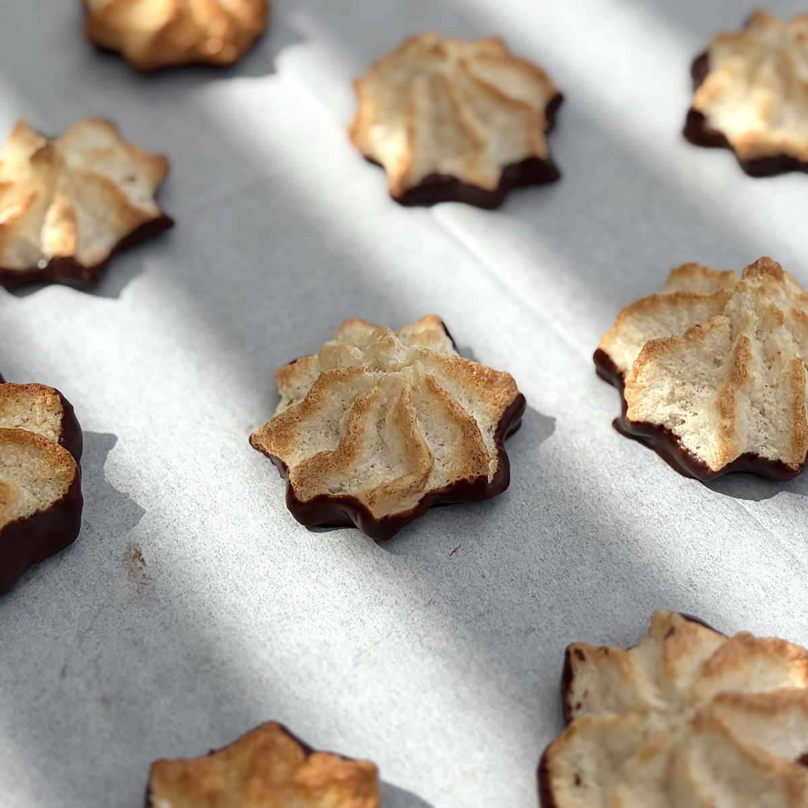
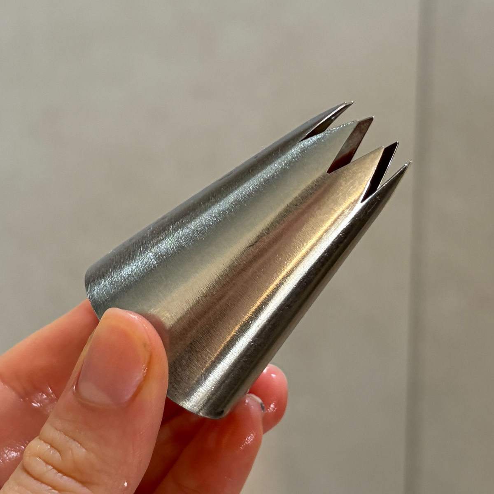
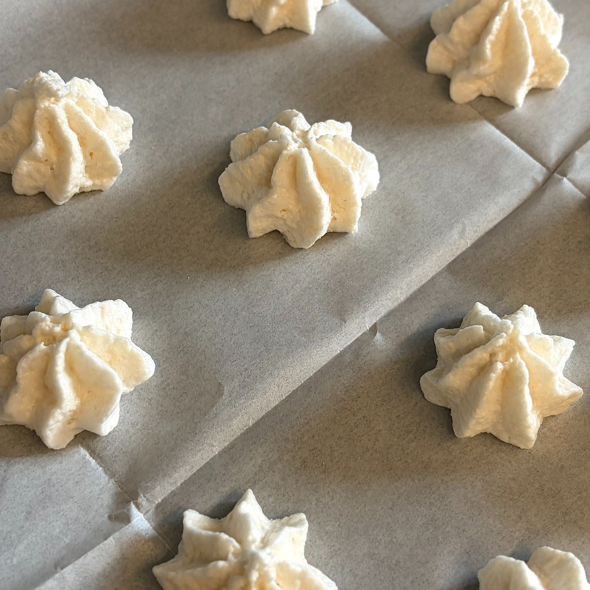

עוגיות קוקוס רכות ובריאות
עודכן: 22 באפר׳
טבלת ערכים תזונתיים בקירוב:
שימו לב שזו טבלה עבור שוקולד 84% ללא סוכר עם 17 גרם פחמימה ל100 גרם
| ערכים | 3 עוגיות (21 גרם) | 100 גרם |
|---|---|---|
| קלוריות | 100.8 | 480 |
| פחמימות | 2.6 | 12.6 |
| חלבונים | 2 | 9.2 |
מתכון מיוחד לחג הפסח!
האמת היא שמעולם לא התחברתי לעוגיות הקוקוס המסורתיות של החג; הן תמיד הרגישו לי יבשות מדי.
אך כשראיתי את אחיו הקטן של בן זוגי נהנה מהן כל כך – החלטתי לתת להן צ'אנס נוסף וגיליתי שכשעושים אותן נכון, הן יכולות להיות רכות ונימוחות.
אחרי לא מעט ניסיונות במטבח וגרסאות שהתפרקו, מצאתי את הפתרון: שמן קוקוס. השמן עוטף את פתיתי הקוקוס, שומר על הלחות שלהם ומונע מהם להתייבש באפייה. התוצאה היא עוגיות רכות, נמסות בפה ומושלמות לחג.

המתכון:
כמות: 20 עוגיות
מרכיבים:
שמן קוקוס 15 גרם (כף)
טיפ: אם משתמשים בדבש כממתיק, מומלץ להפחית את שמן הקוקוס ל-12-14 גרם.
40 גרם קוקוס טחון
כפית תמצית וניל
2 חלבוני ביצה בגודל L
30 גרם סוויטאנגו \ 30 גרם דבש (שימו לב: דבש אינו מתאים לסוכרתיים ולקיטוגנים)
1/2 כפית חומץ או מיץ לימון
קורט מלח
לקישוט:
40 גרם שוקולד שמתאים לתזונה שלכם (אני השתמשתי ב84% ללא סוכר)
2 גרם שמן קוקוס
הוראות הכנה:
חממו מראש תנור ל-160 מעלות בתוכנית טורבו.
ערבבו בקערה את הקוקוס הטחון עם שמן הקוקוס עד לאיחוד, ולאחר מכן הוסיפו פנימה את תמצית הוניל.
בקערה נפרדת ויבשה (ללא שאריות חלמון), הקציפו במהירות גבוהה מאוד את חלבוני הביצה יחד עם החומץ או מיץ הלימון, הממתיק והמלח. הקציפו עד לקבלת מרנג לבן, יציב מאוד ומבריק.
העבירו את תערובת הקוקוס לקערת החלבונים וקפלו אותה פנימה בתנועות עדינות עד לקבלת תערובת אחידה, תוך שמירה על האוויריות של הבלילה.
העבירו את התערובת לשקית זילוף עם צנטר (מומלץ בקוטר 15 מ"מ - ראו בתמונות את הצנטר בו השתמשתי) וזלפו עוגיות על גבי נייר אפייה בקוטר של כ-5 ס"מ. אם אין לכם שקית זילוף, ניתן ליצור תלוליות עגולות בעזרת כפית.
אפו את העוגיות במשך 9–10 דקות עד שהן מזהיבות מעט בחלקן העליון, אך הקפידו לא לייבש אותן יתר על המידה.
הוציאו מהתנור והניחו לעוגיות להצטנן לחלוטין לטמפרטורת החדר לפני שאתם מנתקים אותן מנייר האפייה.
המיסו את השוקולד יחד עם שמן הקוקוס והעבירו לצלחת שטוחה וקטנה. טבלו את התחתית של כל עוגייה בשוקולד והניחו להתקשות (שימו לב שעוגיות על בסיס דבש הן רכות ועדינות יותר בזמן הטבילה). ניתן להעביר את העוגיות למקרר למספר דקות להתקשות מהירה יותר של השוקולד.
חג שמח ובתיאבון!
סרטון מתהליך ההכנה:
לינק לסרטון קצר
תמונות מתהליך ההכנה:

הצנטר בו השתמשתי- צנטר כוכב פתוח קוטר 15 מ"מ

עוגיות לפני אפייה